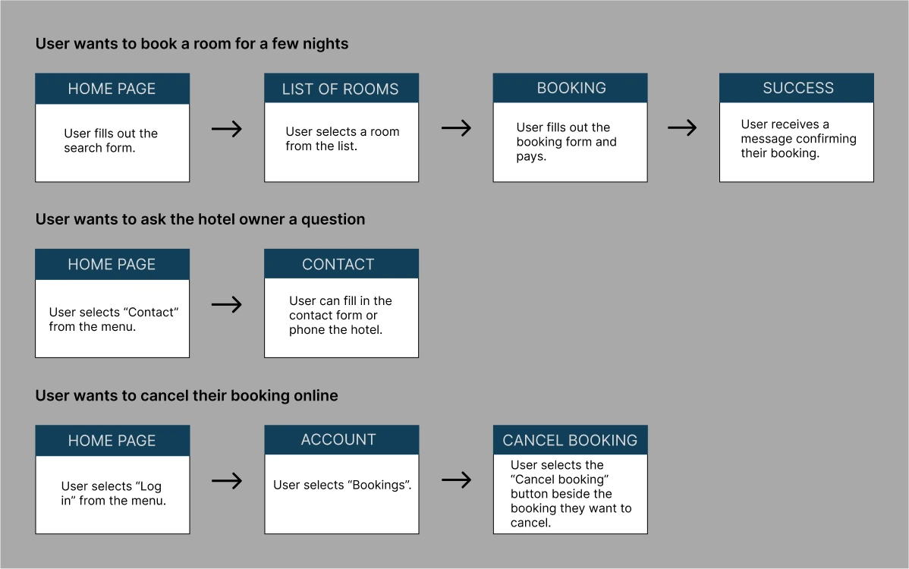
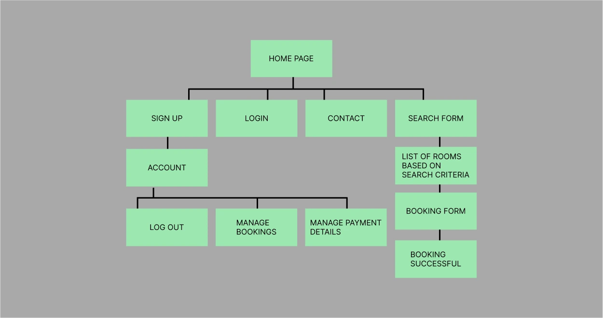
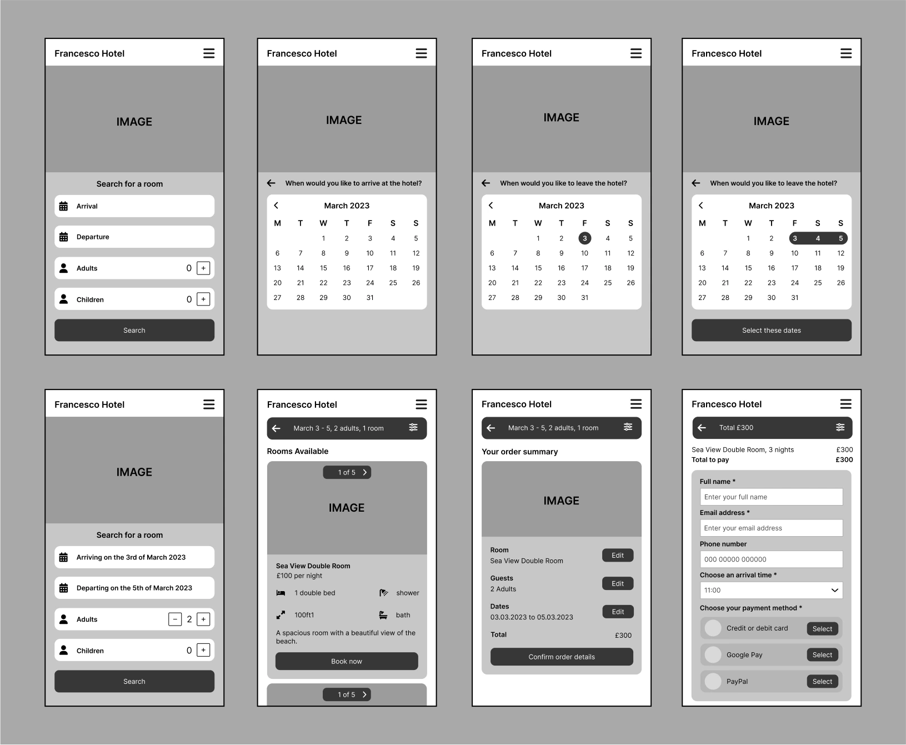
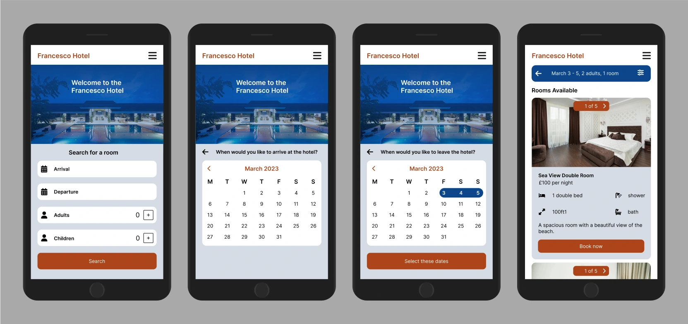

Hotel Mobile Website
This is a UX/UI design project for a hotel mobile website. The website allows users to book a stay at a hotel. Users can search for a room based on specific criteria. They can see pictures of the room and learn about what the rooms have to offer. They can then select a room and book a stay.
Figma Interactive Prototype Video
User Research
User Research Goals
- Understand user goals when using this type of website
- Understand user pain points when using websites
- Understand what type of tasks users carry out on these types of websites
Surveys and Interviews
For the quantitative research, I carried out a survey to find out about what users expect from a hotel website. For the qualitative research, I interviewed people who had experience with using a hotel website.
Key Insights from the User Research
- Users would like to see pictures of the hotel
- Users would like to know what facilities the hotel has
- Users would like to know where the hotel is located
- Users would like to be able to contact the hotel owners
- Users would like to search for a room based on specific criteria
- Users would like to see the available rooms that match their search criteria
- Users would like to see pictures of the rooms
- Users would like to read a description of the rooms
- Users would like to know what facilities the rooms have
- Users would like to be able to easily book a room
User Stories
Account
- As a user I want to make an account so that I can save my booking and payment details
- As a user I want to sign in and out of my account easily
Learning about the hotel
- As a user I want to see pictures of the hotel
- As a user I want to know where the hotel is located
- As a user I want to know what facilities the hotel has
Searching for a room
- As a user I want to search for a room based on specific criteria
- As a user I want to see pictures of the rooms
- As a user I want to read a description of the rooms
Booking a stay
- As a user I want to easily book a stay at the hotel
- As a user I want to securely pay for my booking
Cancelling a booking
- As a user I want to easily cancel a booking if necessary
Contacting the hotel
- As a user I want to contact the hotel so that I can ask a question and get information
User Journey
Sitemap
Low-Fidelity Wireframes
Here are some low-fidelity wireframes I made for the project.
High-Fidelity Wireframes
Here are some high-fidelity wireframes I made for the project.
